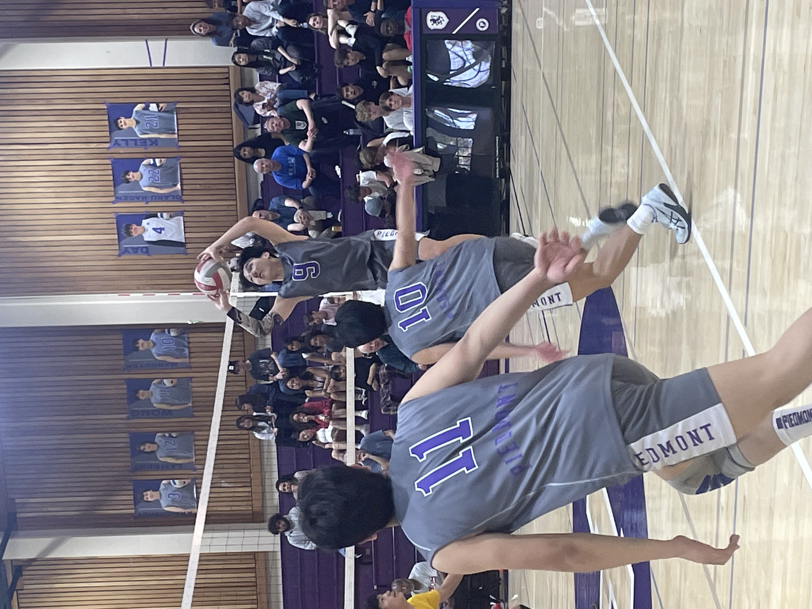

This is a picture of me playing volleyball for my club team at nationals. My team ended up minning nationals so that was really fun, and it was also the first time I have been to nationals. Volleyball plays a big part in my life and I am always trying to find to play with my friends. You can't play volleyball alone. That is what I learned from my club experience. Even if you are really good, you can't do everything yourself, thats why you have 5 other players on the court with you.
This is me playing for my school team. Almost everyone on the team has played or is plying cub volleyball so our team was pretty good compared to last year. More then half of our team is graduating so it will just be me and a couple other juniors carrying the team.